Design graphique ¬ Design éditorial

Design graphique
[ Design graphique pour la bOx of Life ]
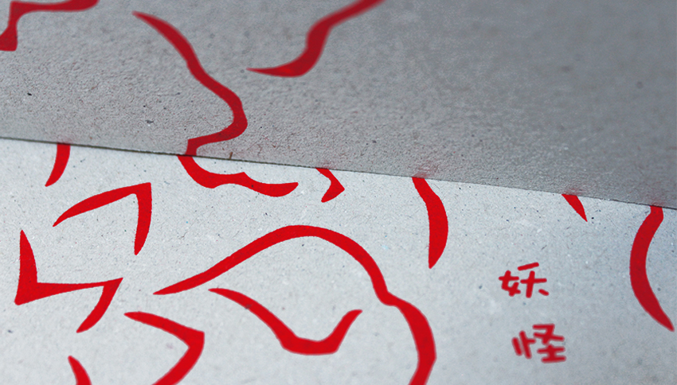
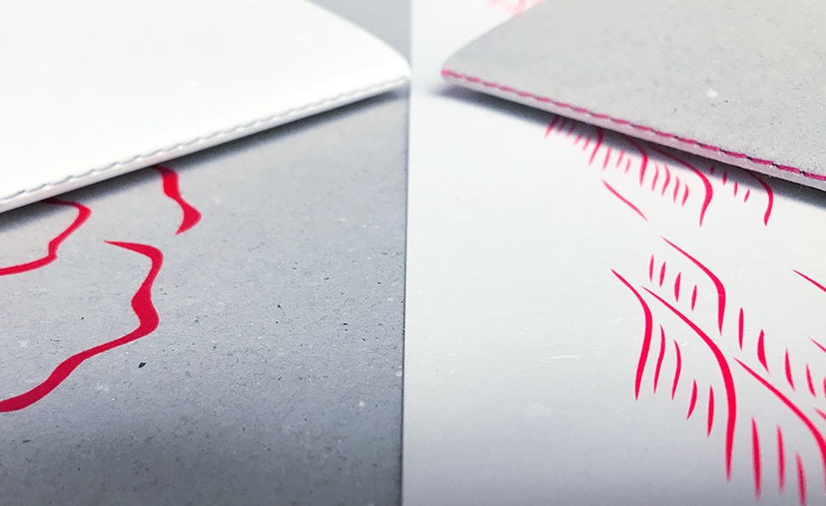
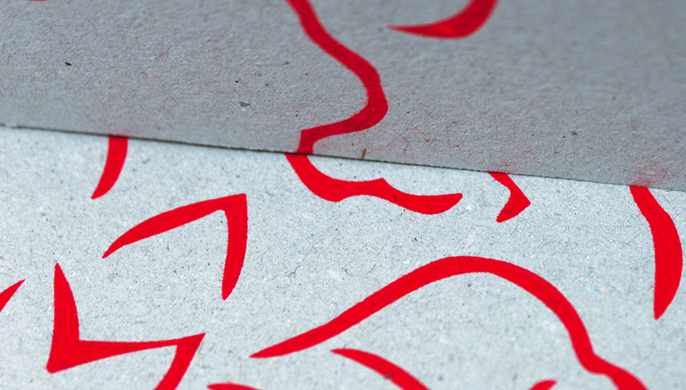
[ Design graphique pour la bOx au jardin des Yõkai ]

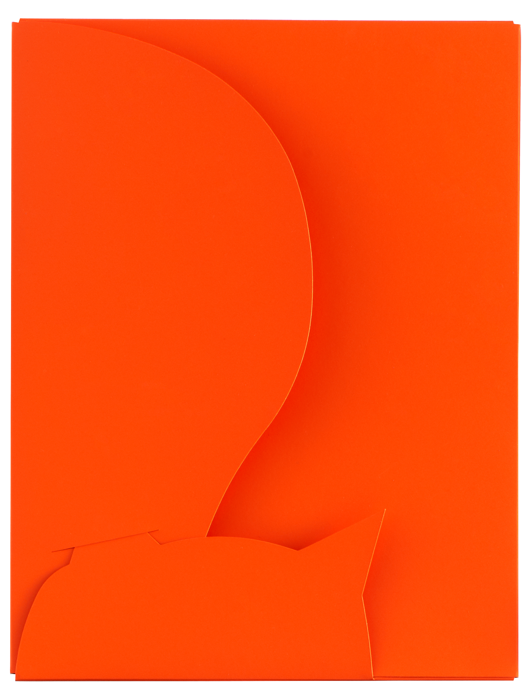

[ Design graphique pour l'another bOx ]

[ Design graphique pour la bOx in black ]
[ Design graphique et objet pour l'exposition Type is Sexy ]

[ Design graphique pour une gamme de papeterie]
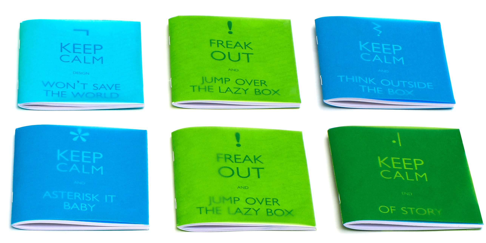
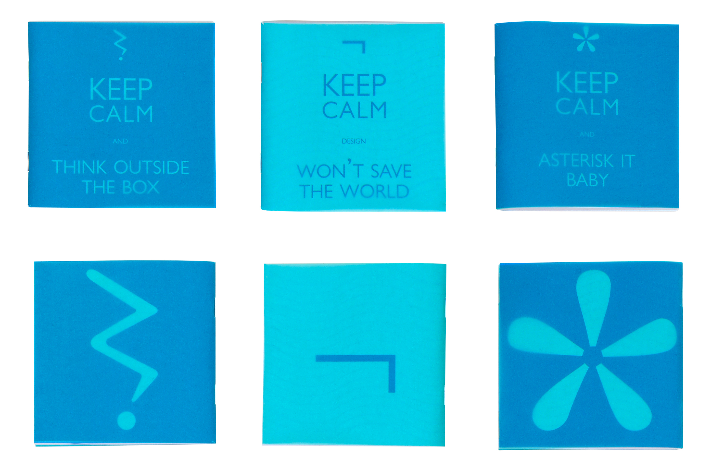
[ Design graphique pour la lazy bOx ]
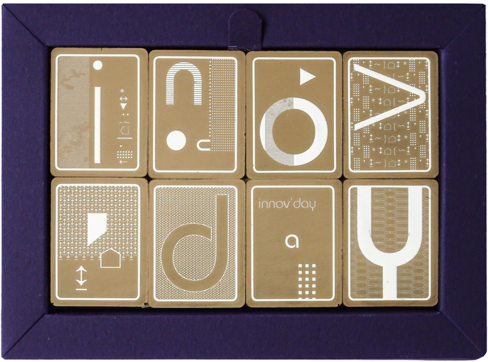
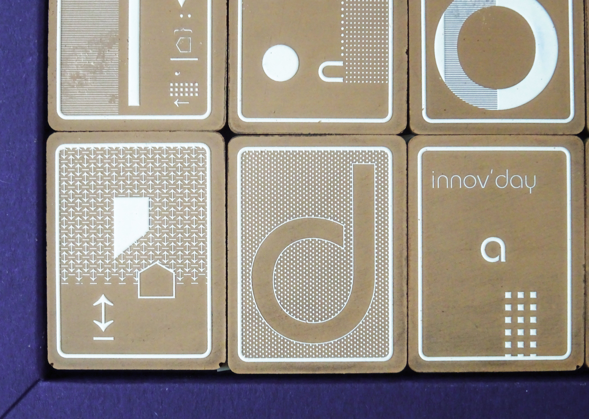
[ Design graphique sur tablette de chocolat pour les Innov'days ]
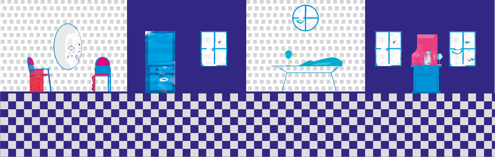
[ Design graphique pour la bOx in Wonderland]

Design éditorial
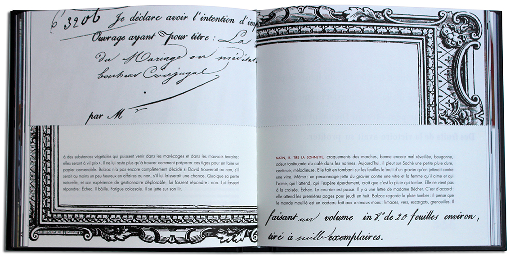
[ collection Curiosité[s] graphique[s] ]
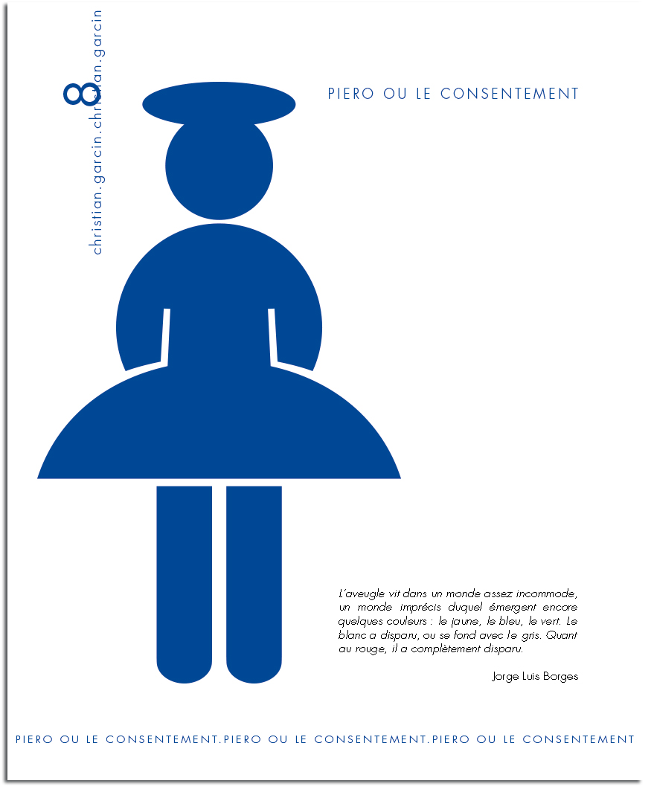
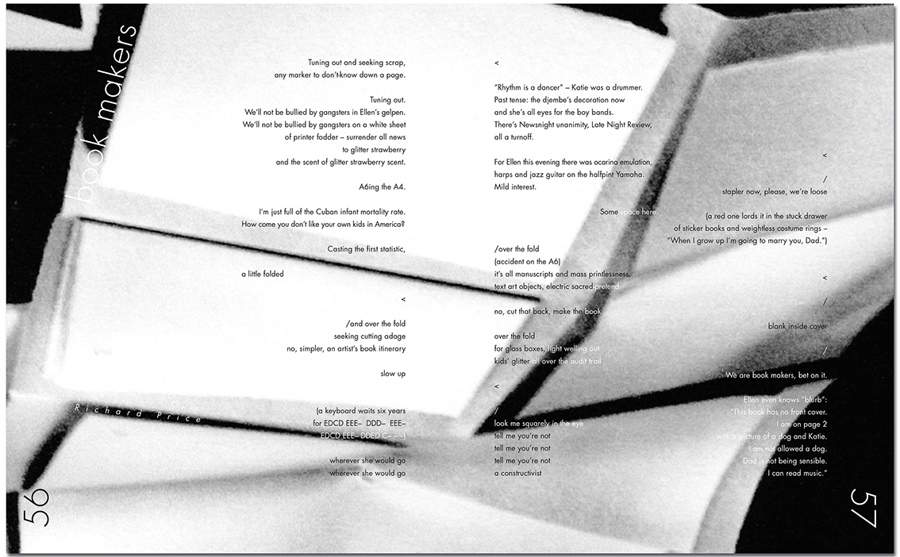
[ revue Cahiers intempestifs ]
[ d'autres exemples de design éditorial à retrouver dans la rubrique édition ]
Mais encore
¬ Design graphique et design objet pour Flammarion 4 [jeux de société, lignes de papeterie, goodies, couvertures…]
¬ Design graphique pour les rapports d'activité du service des publics [pour le compte du musée d'Art moderne de la Ville de Paris]
¬ Design graphique des Forums européens [pour le compte du musée d'Art moderne et contemporain de Saint-Étienne]
¬ Design graphique pour l'exposition « Réalité noire » [pour le compte du musée d'Art moderne et contemporain de Saint-Étienne]
¬ Design graphique pour l'exposition « Félix Thiollier photographe » [pour le compte du musée d'Art moderne et contemporain de Saint-Étienne]
¬ Design graphique et design objet pour la « Malette pédagogique » [pour le compte du musée d'Art moderne et contemporain de Saint-Étienne]
¬ Design graphique pour Festi-mômes [pour le compte de la Ville de de Saint-Étienne]
…